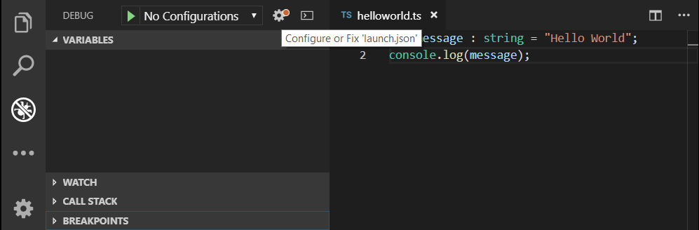
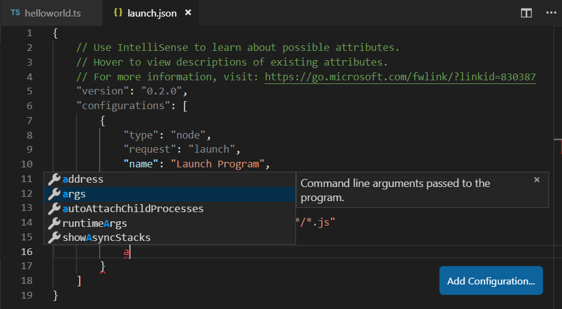
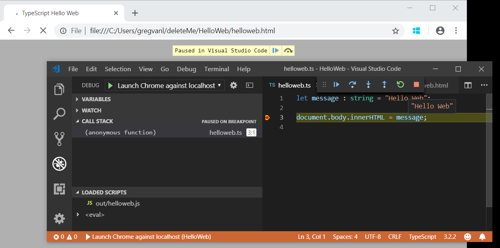

Debugging TypeScript
Visual Studio Code supports TypeScript debugging through its built-in Node.js debugger and Edge and Chrome debugger.
JavaScript source map support
TypeScript debugging supports JavaScript source maps. To generate source maps for your TypeScript files, compile with the --sourcemap option or set the sourceMap property in the tsconfig.json file to true.
In-lined source maps (a source map where the content is stored as a data URL instead of a separate file) are also supported, although in-lined source is not yet supported.
For a simple example of source maps in action, see the TypeScript tutorial, which shows debugging a simple "Hello World" Node.js application using the following tsconfig.json and VS Code default Node.js debugging configuration.
{
"compilerOptions": {
"target": "es5",
"module": "commonjs",
"outDir": "out",
"sourceMap": true
}
}
For more advanced debugging scenarios, you can create your own debug configuration launch.json file. To see the default configuration, go to the Run view (kb(workbench.view.debug)) and press the gear icon or Create a launch.json link to Configure or Fix 'launch.json'.

This will create a launch.json file in a .vscode folder with default values detected in your project.
{
// Use IntelliSense to learn about possible attributes.
// Hover to view descriptions of existing attributes.
// For more information, visit: https://go.microsoft.com/fwlink/?linkid=830387
"version": "0.2.0",
"configurations": [
{
"type": "node",
"request": "launch",
"name": "Launch Program",
"program": "${workspaceFolder}/helloworld.ts",
"preLaunchTask": "tsc: build - tsconfig.json",
"outFiles": [
"${workspaceFolder}/out/**/*.js"
]
}
]
}
VS Code has determined the program to launch, helloworld.ts, included the build as a preLaunchTask, and told the debugger where to find the generated JavaScript files.
There is full IntelliSense with suggestions and information for launch.json to help you learn about other debug configuration options. You can also add new debug configurations to launch.json with the Add Configuration button in the lower right.

Also see Node.js Debugging for examples and further explanations.
Mapping the output location
If generated (transpiled) JavaScript files do not live next to their source, you can help the VS Code debugger locate them by setting the outFiles attribute in the launch configuration. Whenever you set a breakpoint in the original source, VS Code tries to find the generated source by searching the files specified by glob patterns in outFiles.
Client-side debugging
TypeScript is great for writing client-side code as well as Node.js applications and you can debug client-side source code with the built-in Edge and Chrome debugger.
We'll create a tiny web application to show client-side debugging in action.
Create a new folder HelloWeb and add three files: helloweb.ts, helloweb.html, and tsconfig.json with the following content"
helloweb.ts
let message : string = "Hello Web";
document.body.innerHTML = message;
helloweb.html
<!DOCTYPE html>
<html>
<head><title>TypeScript Hello Web</title></head>
<body>
<script src="out/helloweb.js"></script>
</body>
</html>
tsconfig.json
{
"compilerOptions": {
"target": "es5",
"module": "commonjs",
"outDir": "out",
"sourceMap": true
}
}
Run tsc to build the app and then test by opening helloweb.html in your browser (you can right-click helloweb.html in the File Explorer and select Copy Path to paste into your browser).
In the Run view, press the gear icon to create a launch.json file selecting Edge: launch as the debugger, or Chrome if you prefer.
Update the launch.json to specify the local file URL to helloweb.html:
{
"version": "0.2.0",
"configurations": [
{
"type": "pwa-msedge",
"request": "launch",
"name": "Launch Edge against localhost",
"url": "file:///C:/Users/username/deleteMe/HelloWeb/helloweb.html",
"webRoot": "${workspaceFolder}"
}
]
}
The Run view configuration dropdown will now show the new configuration Launch Edge against localhost. If you run that configuration, your browser will launch with your web page. Open helloweb.ts in the editor and click the left gutter to add a breakpoint (it will be displayed as a red circle). Press kb(workbench.action.debug.start) to start the debug session, which launches the browser and hits your breakpoint in helloweb.ts.

Common questions
Cannot launch program because corresponding JavaScript cannot be found
You've likely not set "sourceMap": true in your tsconfig.json or outFiles in your launch.json and the VS Code Node.js debugger can't map your TypeScript source code to the running JavaScript. Turn on source maps and rebuild your project.